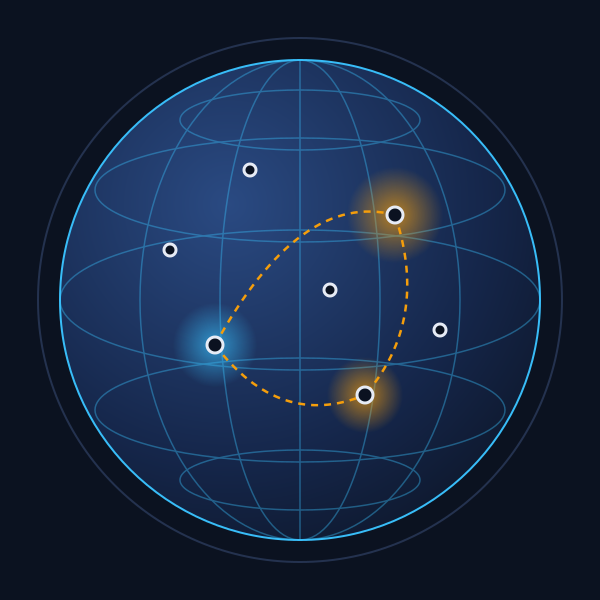

Sanctions 101
Before looking at how sanctions are evaded, it helps to understand what they are, who adopts them and why enforcement is such a challenge.
What are UN sanctions?
Under Article 41 of the UN Charter, the Security Council can decide on measures short of armed force to maintain or restore international peace and security. These measures are commonly called sanctions.
Under Article 25, all UN member states agree to accept and carry out the Council's decisions, which makes Security Council sanctions legally binding on every state.
- Adopted through Security Council resolutions
- Usually overseen by a dedicated sanctions committee
- Often supported by a Panel of Experts or monitoring team
- Reviewed, renewed, modified or lifted by the Council

Who enforces them?
The United Nations has no police force or customs service. Enforcement is carried out by member states.
Security Council
Decides which measures apply, to whom, and for how long.
Sanctions committees
Made up of Council members; manage designations, exemptions and implementation questions.
Member states
Turn resolutions into national law and apply them through customs, banks, ports and regulators.
Because implementation depends on national capacity and political will, gaps between countries are exactly where evasion tends to thrive.
Common types of measures
Each regime is tailored to its context. These are the main building blocks, with examples of how they have been applied.
| Measure | What it does | Examples |
|---|---|---|
| Arms embargo | Prohibits supplying, selling or transferring weapons and related materiel | Libya, South Sudan, Central African Republic |
| Asset freeze | Freezes funds and economic resources of designated people and entities | Al-Qaida / ISIL (Da'esh) sanctions regime |
| Travel ban | Requires states to prevent designated individuals entering or transiting their territory | Many regimes, including Libya and Yemen |
| Commodity restrictions | Bans or caps trade in specific goods | DPRK coal, iron and seafood (res. 2371, 2375); refined petroleum cap (res. 2397); Somalia charcoal (res. 2036); Libya illicit crude oil (res. 2146) |
| Sectoral and financial | Limits financial services, joint ventures and labour arrangements | DPRK joint ventures and overseas workers (res. 2375, 2397) |
Why do actors evade sanctions?
Sanctions raise the cost of doing business, so they create strong incentives to find workarounds.